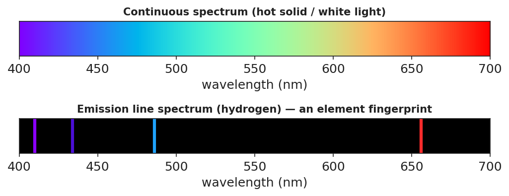

Unit: Modern Physics — Lesson 03: Energy-Level Diagrams and Spectra
Phenomenon
Sunlight through a diffraction grating spreads into a smooth, continuous rainbow — every color. But a glowing tube of hydrogen gas through the same grating shows only a few sharp colored lines — always the same ones. Helium glows with a completely different set of lines.

Driving Question
Why does a glowing gas emit only certain colors, and how can that fingerprint tell us what a distant star is made of?
Notice & Wonder
A rainbow has every color, but hydrogen shows only a few. Write two things you notice and two things you wonder.
Initial Model
Draw a few horizontal lines as electron "energy steps." Show an electron and use an arrow to show what you think it does to release light.
Investigate
Click any pair of energy levels to make an electron drop from a higher level to a lower one. It emits a photon whose color depends on the size of the gap — a bigger drop makes a bluer photon. Each emission adds a line to the spectrum strip below. Build hydrogen's fingerprint.
Pick a starting (higher) level, then a lower level to drop to.
Make It Make Sense
- White light makes a continuous rainbow, but glowing hydrogen makes only a few sharp lines. Explain why, using energy levels.
- A big electron drop and a small electron drop both emit photons. Which photon has the higher frequency (bluer color)? Why?
- How can astronomers know what a distant star is made of without going there?
Stuck? Sentence frame
"When an electron drops to a ___ energy level, it ___ a photon; a bigger drop makes a ___-frequency color."
Key Vocabulary (max 3)
- energy level — one of the fixed, allowed energies an electron can have in an atom (its allowed "steps")
- photon emission — the release of a photon when an electron drops to a lower energy level; the photon's energy equals the gap (E = h·f)
- line spectrum — the unique set of sharp colored lines a glowing element emits; it acts as the element's fingerprint
Revise Your Model
Return to your energy-step drawing. Label which arrow direction emits a photon and which color comes from the biggest drop. Connect one line in the spectrum strip to one jump in your diagram.
Return to the Phenomenon
In one sentence, explain why hydrogen shows only a few lines, using energy level and line spectrum. (Target: "Hydrogen's electrons can only jump between fixed energy levels, so only a few photon energies are possible — producing hydrogen's unique line spectrum.")
Exit Ticket + Closing Reflection
- (a) White light makes a continuous rainbow, but glowing hydrogen makes only a few sharp lines — explain why, using energy levels. (b) An electron drops from n = 4 → n = 1 (a big drop) and from n = 2 → n = 1 (a small drop). Which emitted photon has the higher frequency? Why? (c) How can astronomers tell what a distant star is made of?
- Reflection: What clicked for you at the boards today, and who helped it click?